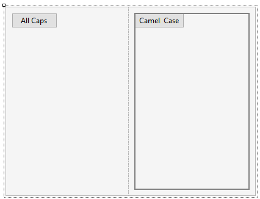
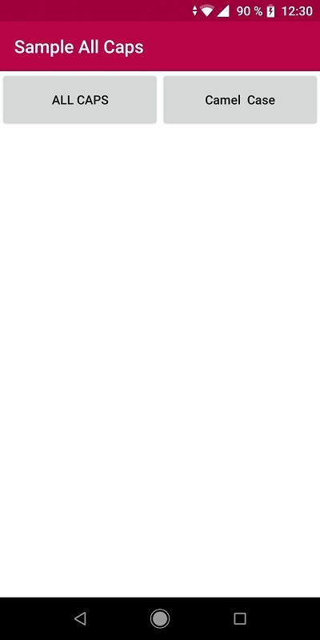

Shows text in All Caps Values
Description
Sets whether the text is shown using all capital letters or not. So, when the property is set to True, all letters are capitalized, and when the property is set to False, text appears at it was written or stored. Run-time/Design-timeThis property applies only at design-time. Samples
In the following Panel for Smart Devices there are 2 buttons:
 At runtime, the caption of the first button is 'ALL CAPS' and the other is 'Camel Case':  How to apply changesTo apply changes made by this property, Build a main object. AvailabilityThis property is available since GeneXus 16 upgrade 1. Scope Objects: Menu for Smart Devices |